ゆうパケットポストmini
160 円
専用封筒代が別途必要（郵便局では20円）
- 大きさ
- 専用封筒の内寸 21.1 × 16.8cm
- 厚さ・重さ
- ポストに入る厚さ（目安3cm）／2kg以内
- 発送場所
- 郵便ポスト
小さなアクセサリー・薄い小物に。防水袋に入れ、必要な緩衝材を加えて専用封筒へ。
詳しい条件を公式で確認 ↗メルカリお役立ち
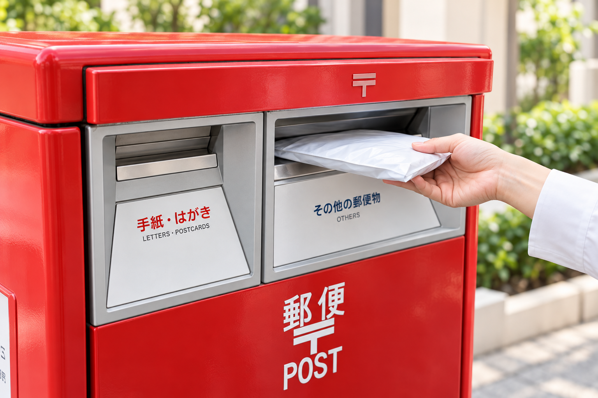
何で包む？ どう送る？
迷ったときは、ここで確認。
料金・サイズの確認：2026年10月26日。発送前に公式案内も確認してください。通常料金を掲載し、期間限定割引は含めていません。
袋・箱・緩衝材を含めて測ります。
縦 ＋ 横 ＋ 高さ ＝ 3辺合計「送料＋封筒・箱・シール代」で比べましょう。ポスト投函は、無理なく差し込めることが条件です。「厚さ4cmなら必ず送れる」という意味ではありません。
匿名配送を使う場合は、購入前から配送方法をメルカリ便に設定しておきましょう。以下は通常送料（税込）です。資材代が別にかかる方法があります。
160 円
専用封筒代が別途必要（郵便局では20円）
小さなアクセサリー・薄い小物に。防水袋に入れ、必要な緩衝材を加えて専用封筒へ。
詳しい条件を公式で確認 ↗210 円
袋や箱などの資材代は別途
最小サイズは23 × 11.5cm。薄手の服は防水袋＋宅配袋に。梱包した状態で厚みを測ります。
詳しい条件を公式で確認 ↗215 円
発送用シールまたは専用箱が必要
シール方式は手持ちの袋・箱が使えます。専用箱は外寸32.7 × 22.8 × 3cm。投函前にコードを読み取ります。
詳しい条件を公式で確認 ↗450 円
専用BOX 70円 → 合計520円
雑貨・小型のおもちゃなどに。緩衝材で中の動きを抑えます。専用薄型BOXもあり、使用済みの箱は再利用できません。
詳しい条件を公式で確認 ↗455 円
専用箱 65円 → 合計520円
衣類・雑貨などに。専用箱を変形させず、ふたがきちんと閉まる量に。ポストには投函しません。
詳しい条件を公式で確認 ↗750〜 円
60サイズから。資材代・集荷等の追加料金は別途
厚手の服・靴・家電などに。厚さ7cm未満でも、専用箱に入らない場合は候補になります。
詳しい条件を公式で確認 ↗封筒や箱に厚みを出すと、入れられる縦・横の寸法は小さくなります。商品の寸法だけで判断せず、実際に収まるか確認してください。
送料230円。3辺合計60cm以内・長辺34cm以内・厚さ3cm以内・1kg以内。郵便局やローソンなどから発送します。ゆうパケットポストとは別の方法です。
公式案内：ゆうゆうメルカリ便 ↗
宅急便はらくらくメルカリ便、ゆうパックはゆうゆうメルカリ便の料金です。ゆうパックの重さは全サイズ25kg以内。
| サイズ | らくらく メルカリ便 送料／重さ上限 | ゆうゆう メルカリ便 （重さ上限：全サイズ25kg） |
|---|---|---|
| 60 | 750円／2kg | 750円 |
| 80 | 850円／5kg | 870円 |
| 100 | 1,050円／10kg | 1,070円 |
| 120 | 1,200円／15kg | 1,200円 |
| 140 | 1,450円／20kg | 1,450円 |
| 160 | 1,700円／25kg | 1,700円 |
| 170 | ― | 1,900円 |
| 180 | 2,100円／30kg | ― |
| 200 | 2,500円／30kg | ― |
例：60サイズは3辺合計60cm以内です。宅急便は重さが超えると上のサイズ扱いになります。160サイズを超える宅急便は、ヤマト営業所または集荷を利用します。
公式案内：宅急便の料金・制限 ↗
公式案内：ゆうパックの料金・制限 ↗
きれいに畳む → 透明の袋などで防水 → 中が見えない宅配ビニール袋へ。装飾や素材を傷めるほど圧縮しないようにします。
防水袋に入れ、必要に応じて厚紙で補強。角がつぶれないよう、余裕のある封筒や箱に入れます。
気泡緩衝材で包み、丈夫な箱へ。箱のすき間を紙などで埋め、中で商品が動かないようにします。
重い物や壊れやすい物は段ボールへ。袋で送る場合も、破れにくい宅配用の袋を使います。薄いゴミ袋だけでの発送は避けましょう。
サイズを小さくすることより、商品が傷まず届くことを優先。箱の膨らみや、袋から突き出した部分も含めて測りましょう。
専用資材は公式掲載の実物画像です。そのほかの資材は、形を伝えるための生成イメージです。
配送方法に合うものを選びましょう。実物のパッケージで見比べられます。
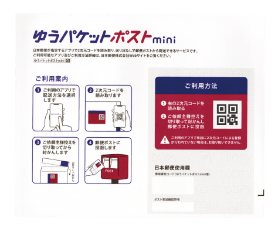
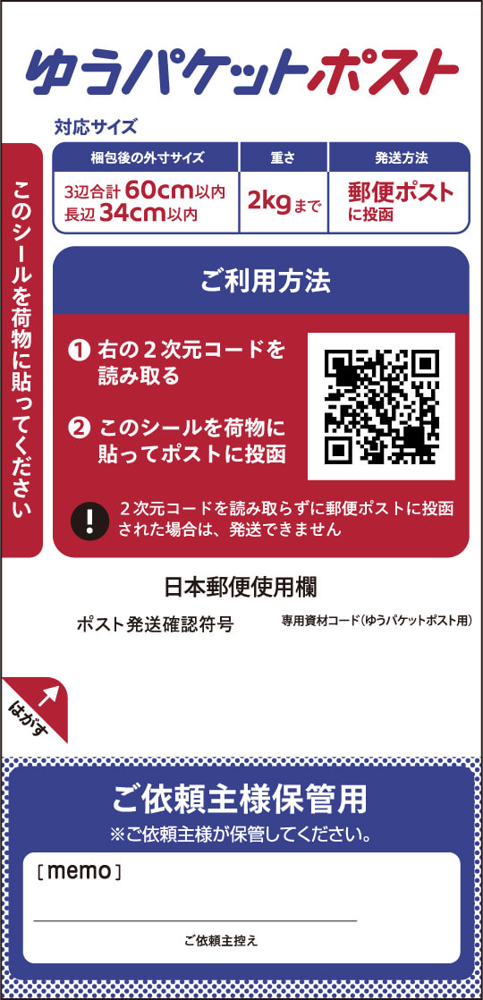
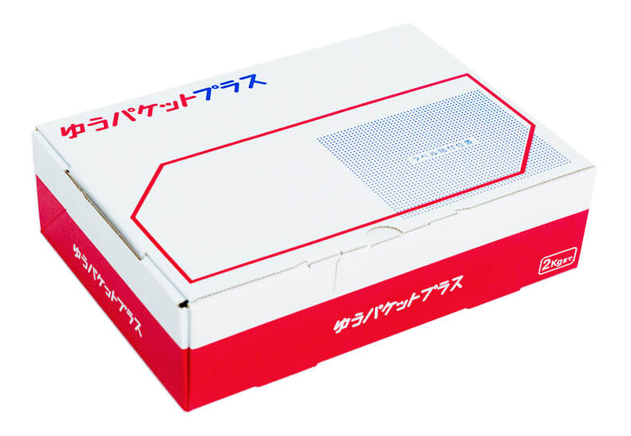
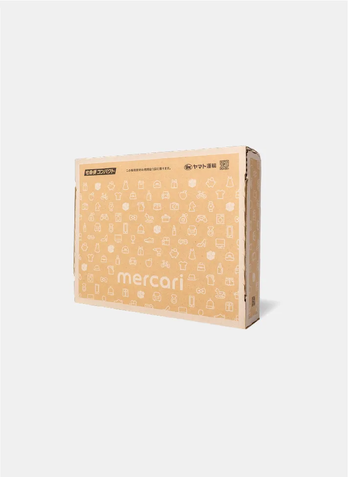
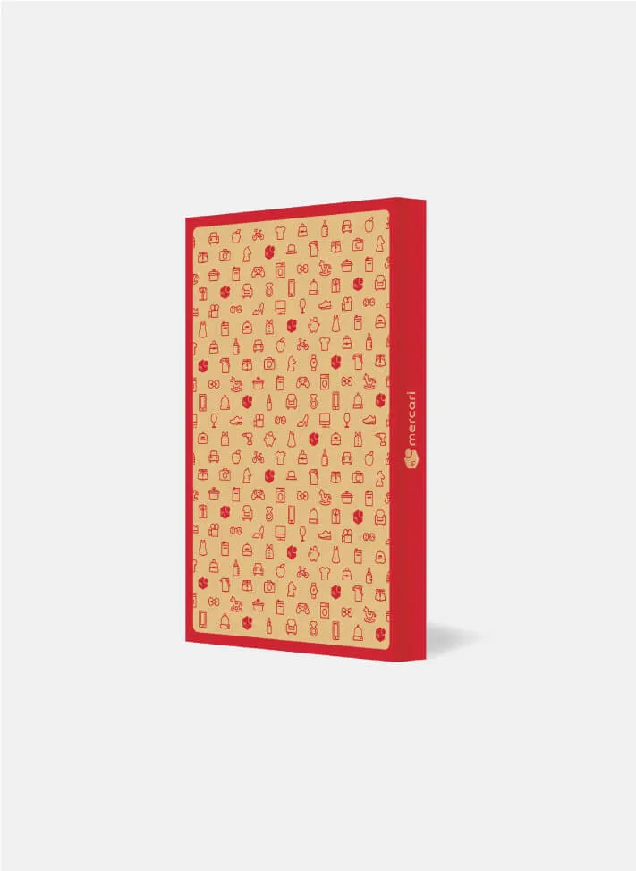
パッケージは販売店などによって異なる場合があります。ゆうパケットポスト専用箱は郵便局での販売が終了していますが、購入済みの箱は利用できます。
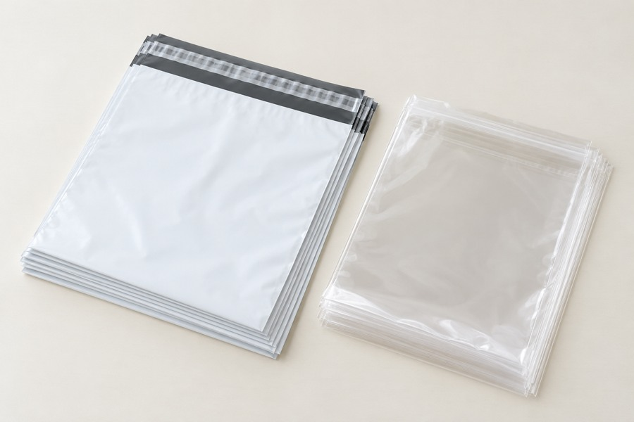
A4前後など、扱う商品に合うサイズを用意。衣類は内袋と外袋を使い分けると水濡れ・透け対策ができます。
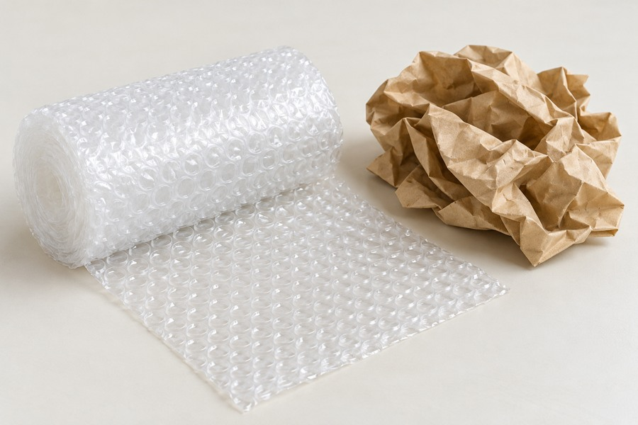
割れ物・傷つきやすい物の保護に。幅30cm程度のロールは小物を包む際に扱いやすいサイズです。
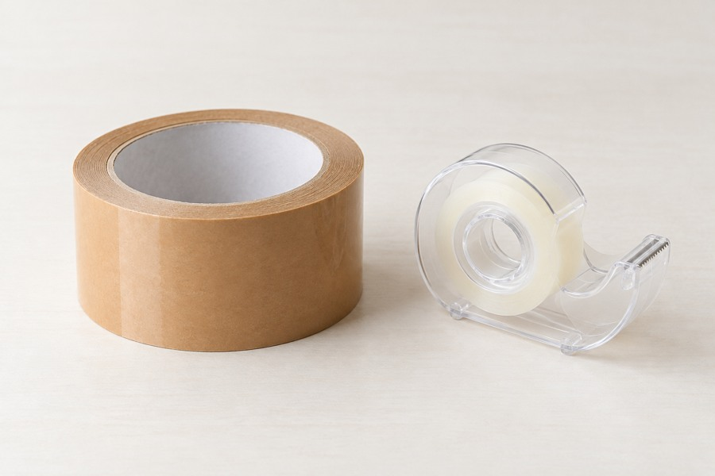
箱の封や外袋の固定に。仮止め用の弱いテープと、発送の封をする丈夫なテープを使い分けます。
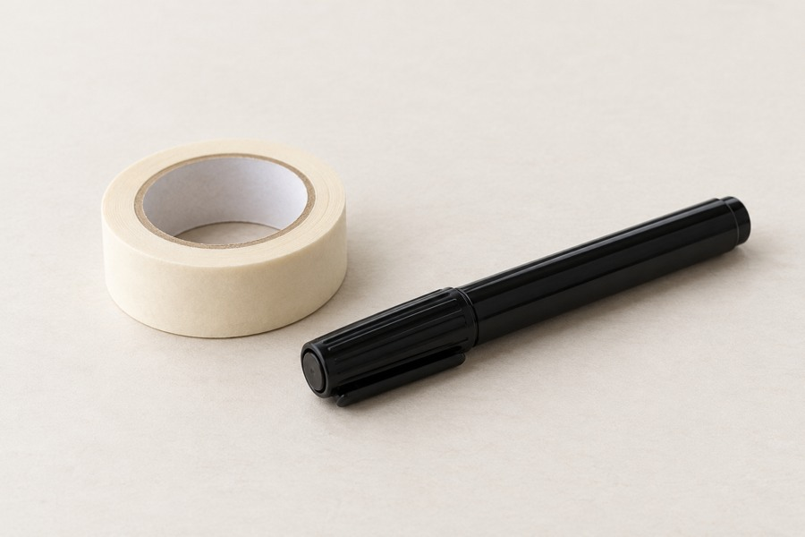
袋に商品番号を書く管理用。商品そのものに直接貼らず、保管用の袋などに付けます。
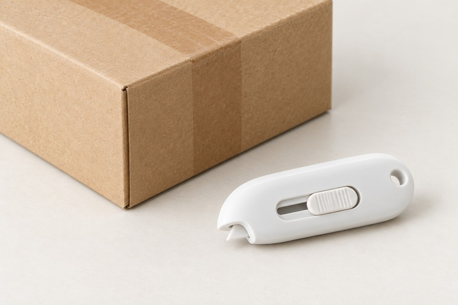
開封時の作業用。刃を深く入れて商品を傷つけないよう注意し、使用後は安全な場所へ。
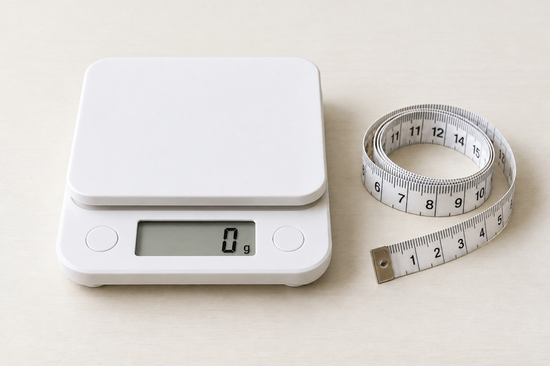
梱包した荷物のサイズ・重量を確認。厚さ測定用の定規もあると薄型発送で便利です。
まず自分がよく扱う商品に合う資材を選びましょう。専用資材は郵便局・配送会社・対応するコンビニなどで確認できます。取扱い・在庫・販売価格は店舗によって異なります。
公式案内：梱包資材と購入場所 ↗
商品が増えても迷わないよう、商品と出品情報に同じ番号を付けましょう。
例の番号は自由に決めてOK。保管箱は重さと強度に合わせて置き、無理に積み重ねないようにします。
匿名配送を使わない場合の選択肢です。相手の住所が必要になり、補償・追跡などの条件もメルカリ便と異なります。
大きさ・厚さ・重さで料金が変わります。普通扱いには追跡や損害賠償がないため、商品の価値も考えて選びましょう。
全国一律240円。オンライン決済と宛名ラベルの印刷が必要です。追跡あり・損害賠償なし。
専用封筒210円。A5・厚さ2cm・1kg以内。追跡や損害賠償はありません。
ライト430円／プラス600円。どちらも4kg以内・追跡あり。ライトは厚さ3cm以内で郵便受けへ、プラスは専用封筒に収まる範囲で対面配達。損害賠償なし。
公式案内：郵便・レターパック等の最新料金 ↗
公式案内：クリックポストの条件 ↗

具体的な始め方を、もっと詳しく知りたい方へ。
公式LINEに戻って「無料勉強会」と送ってください。